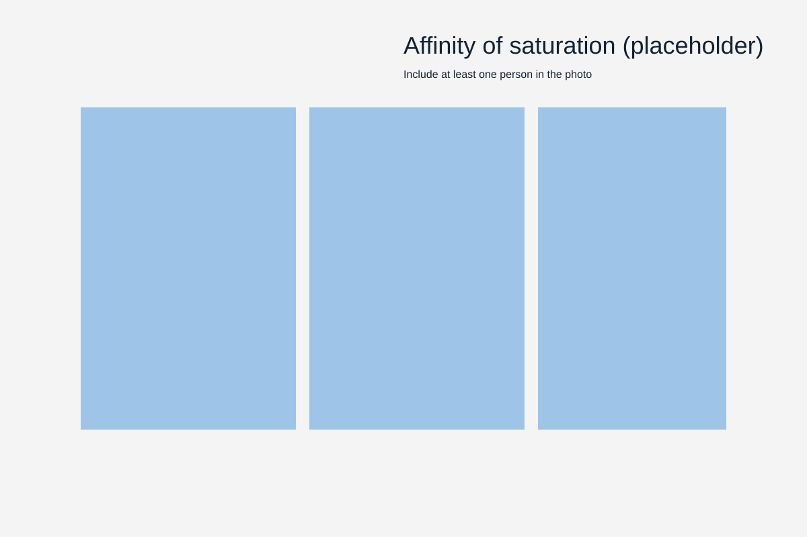
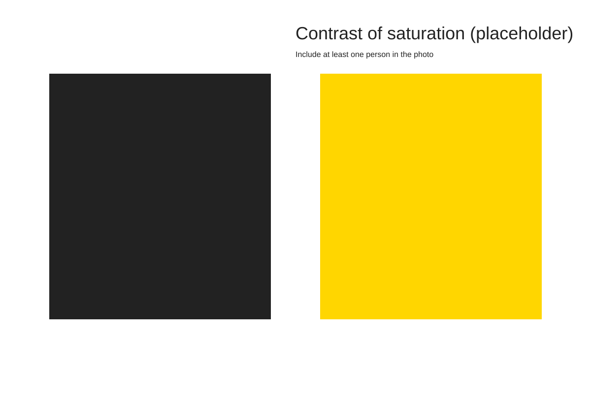
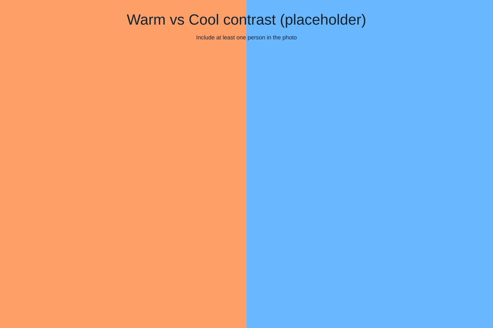
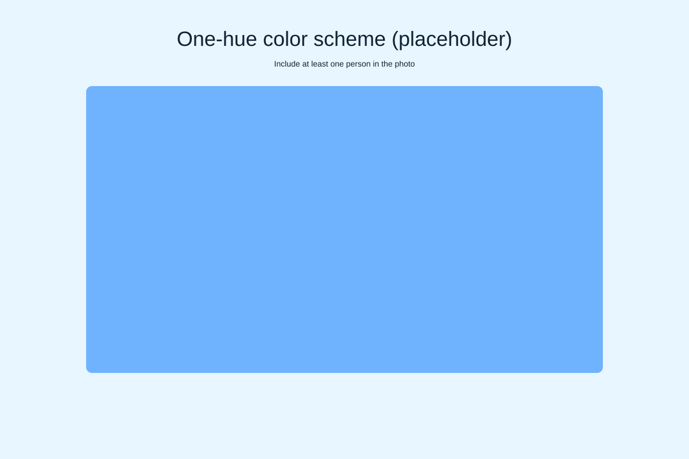
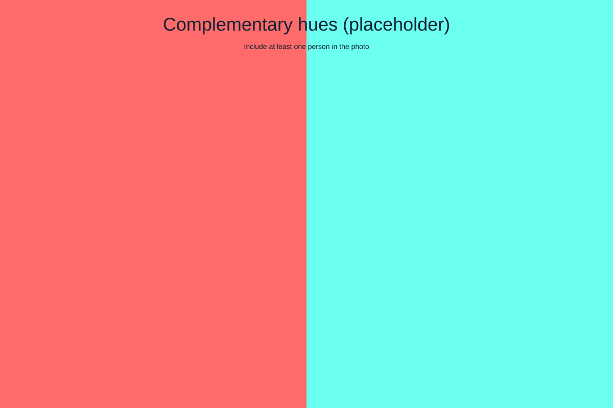
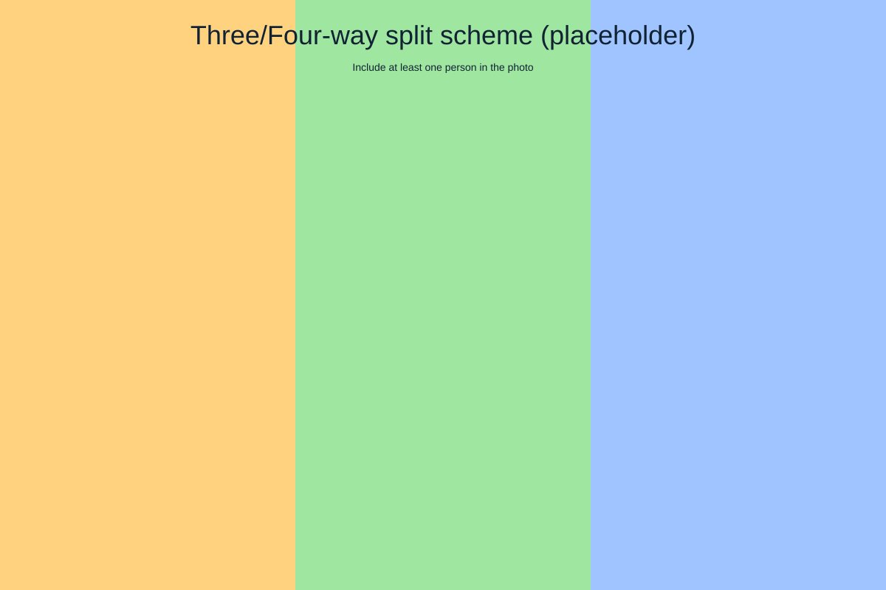

Response 6 - Assignment: Color
This page contains six standalone image slots (placeholders). Replace each placeholder with your original photographs (unique images only) that include at least one person. Present images in the order below, label them, and add a short reflection (100+ words).
1. Affinity of saturation

2. Contrast of saturation

3. Contrast of warm and cool colors

4. One-hue color scheme

5. Complementary hues color scheme

6. Three-way or four-way split color scheme

Reflection
Please write a short reflection (at least 100 words) describing what you learned through this exercise and how color choices affected visual intensity and meaning in your images.